Old
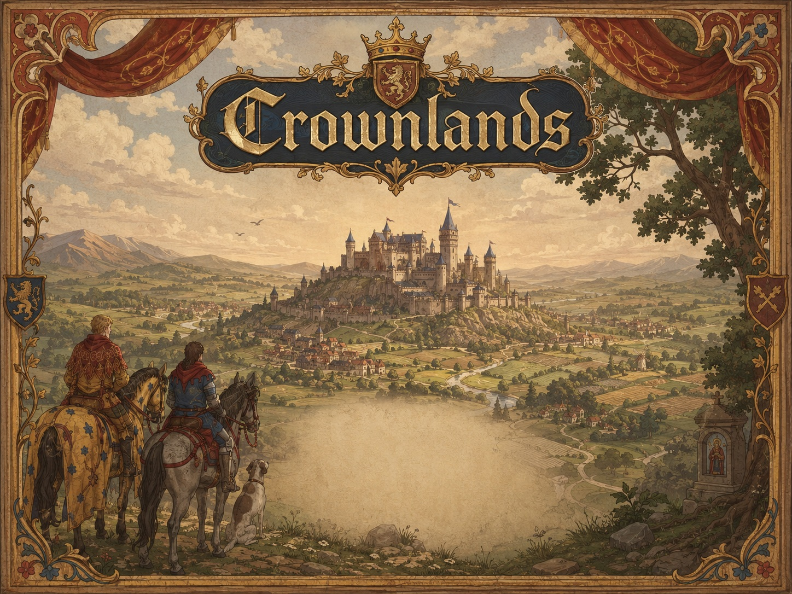
Development-only gallery for the core world raster replacement pass. These previews compare the old source assets, new source masters, optimized gameplay derivatives, and actual map composites.

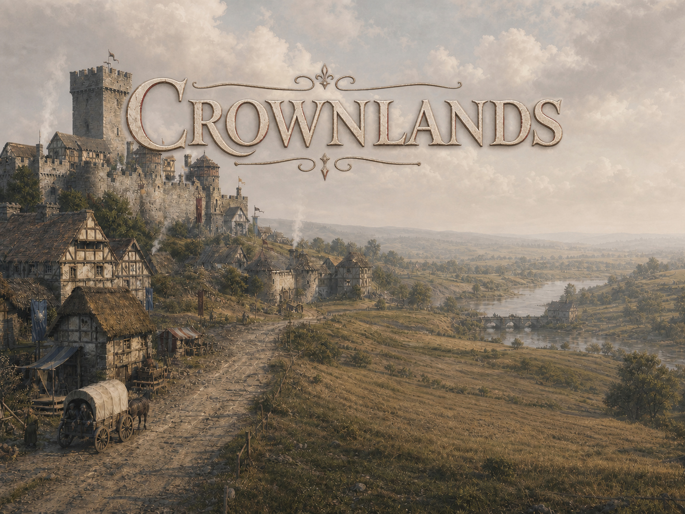
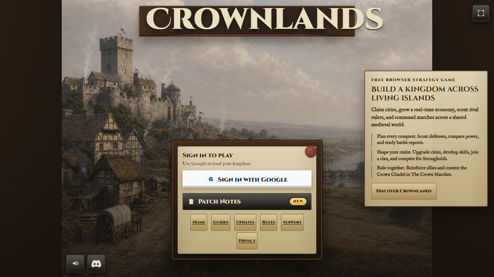
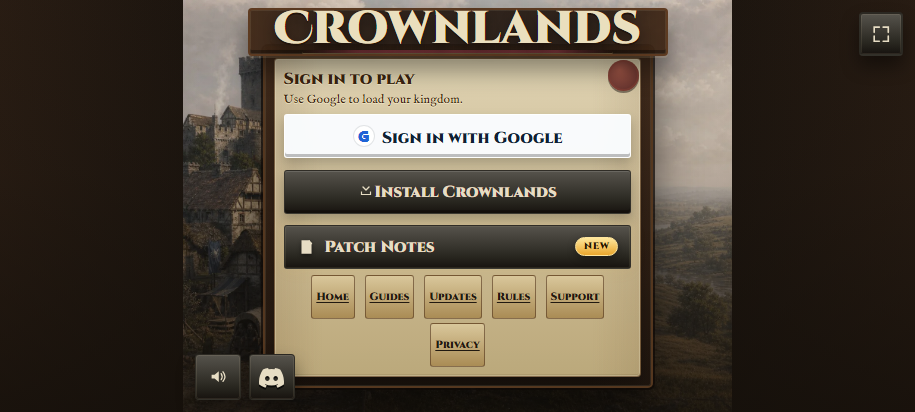
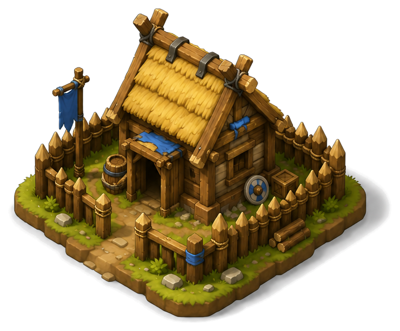


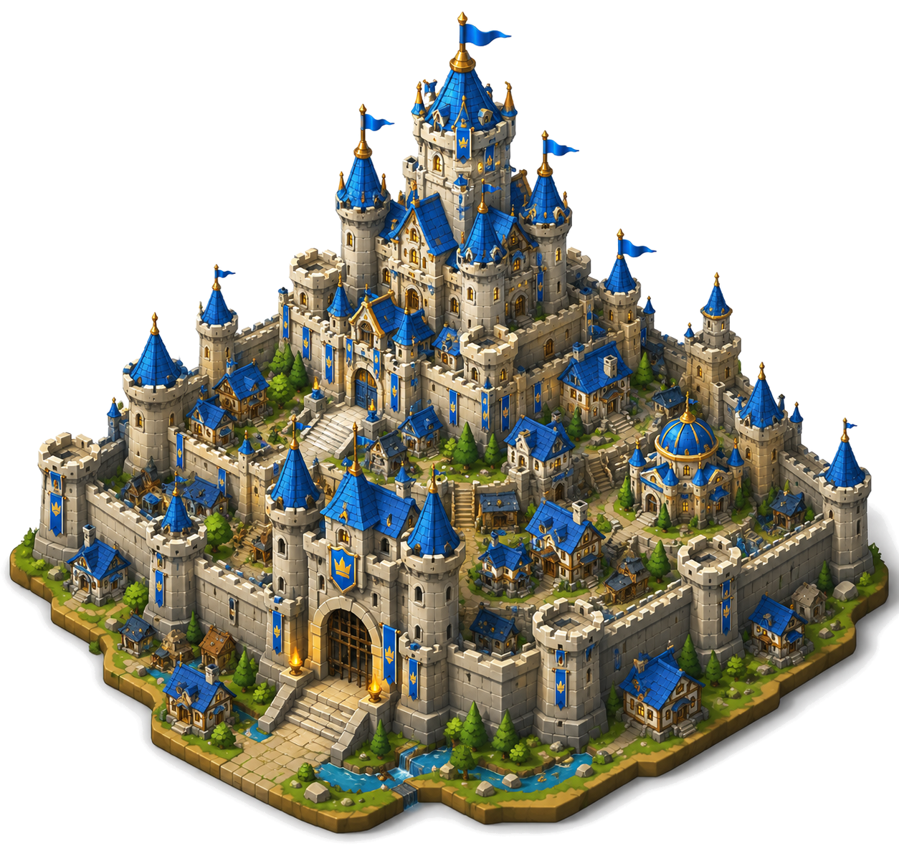


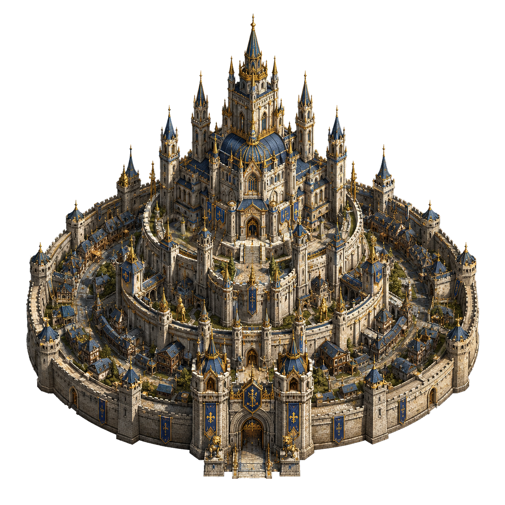
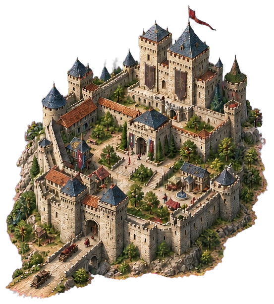

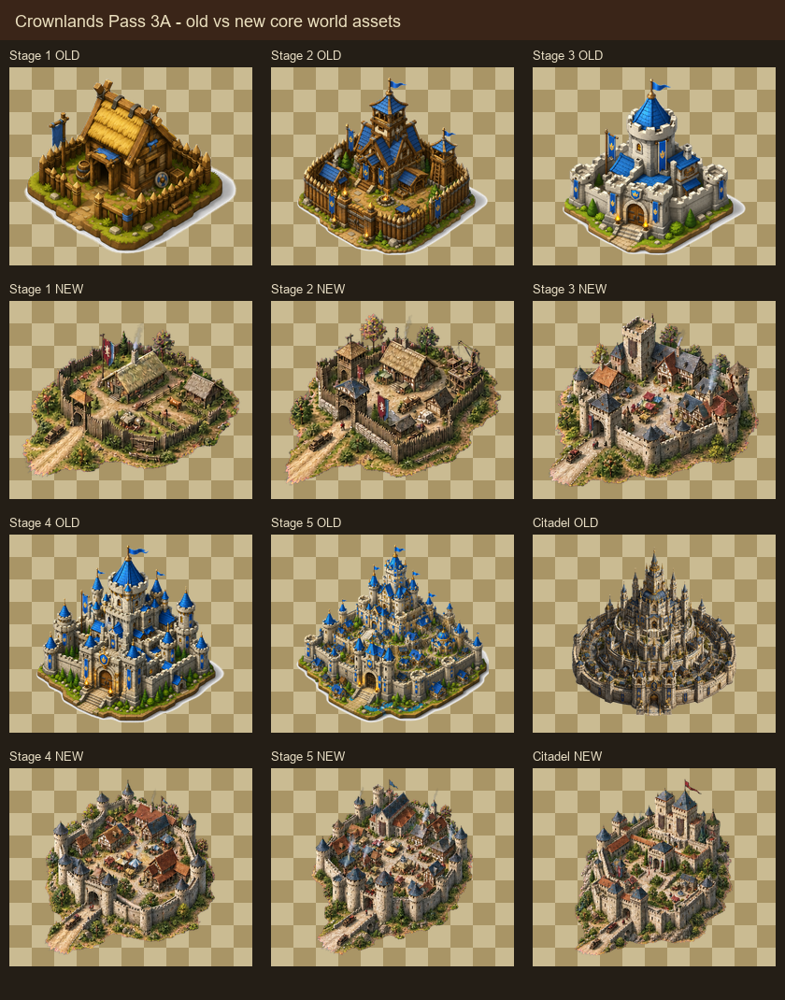
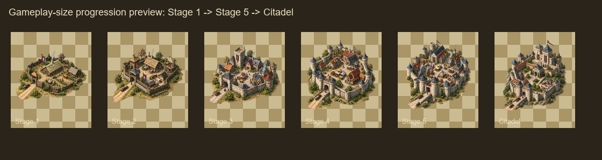
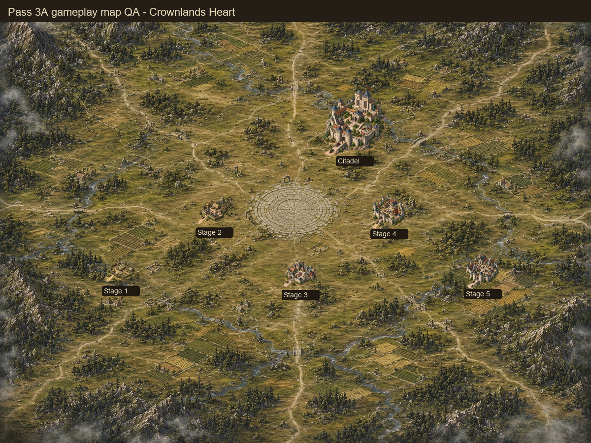
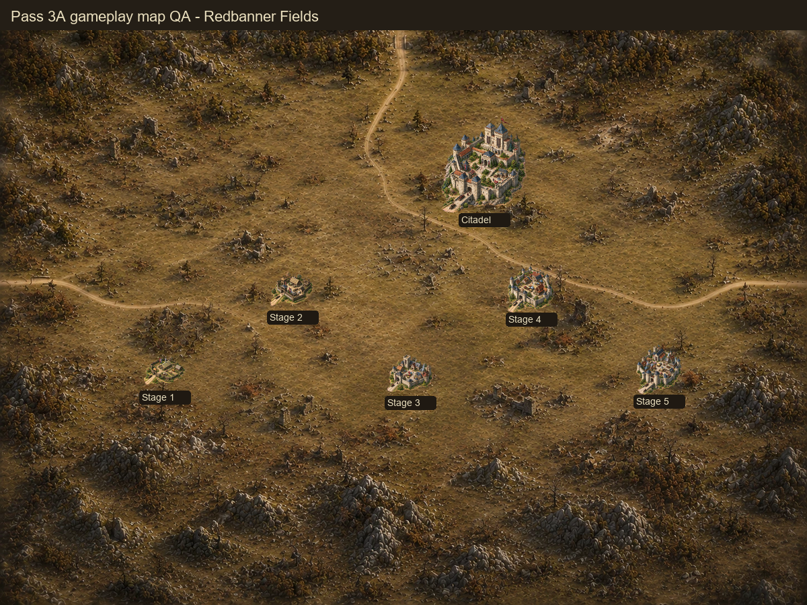